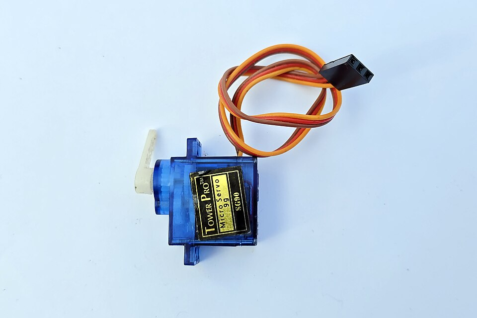

E05 — Sensores y Actuadores
"Un sistema embebido sin sensores es ciego; sin actuadores, es paralítico. Con ambos, percibe y cambia el mundo." — la definición de computación física
Acá se cierra el ciclo de la computación física: sensar (traducir el mundo a números) y actuar (traducir números a movimiento, luz, sonido). Es la membrana entre tu código y la realidad.
Parte 1 — Sensores: leer el mundo
1. Tipos de sensores por su salida
| Tipo de salida | Cómo se lee | Ejemplos |
|---|---|---|
| Digital (HIGH/LOW) | digitalRead | Botón, PIR (movimiento), final de carrera |
| Analógico (voltaje variable) | analogRead (ADC, E03) | Potenciómetro, LDR (luz), sensor de temp analógico |
| Digital por bus (I2C/SPI) | librería + protocolo (E03) | BME280, MPU6050 (acelerómetro), RTC |
| Por tiempo/pulso | pulseIn / timer (E04) | Ultrasónico HC-SR04, DHT22 |
2. Acondicionamiento de señal
- Divisor de voltaje (E01): para sensores resistivos (LDR, termistor).
- Amplificación (op-amp, E01): señales débiles (micrófono, célula de carga).
- Filtrado (capacitor, E01): quitar ruido de alta frecuencia.
- Filtro en software: promediar N lecturas, media móvil — el primer paso del DSP (E07).
// Filtro simple en software: media móvil
float suavizar(float nueva) {
static float prom = 0;
prom = prom * 0.9 + nueva * 0.1; // 90% histórico, 10% nuevo
return prom;
}Parte 2 — Actuadores: cambiar el mundo
3. LED y cargas pequeñas
4. Motores DC
// Driver L298N: IN1/IN2 dan dirección, ENA (PWM) da velocidad
void motor(int velocidad, bool adelante) {
digitalWrite(IN1, adelante);
digitalWrite(IN2, !adelante);
analogWrite(ENA, velocidad); // 0-255 PWM (E03)
}5. Servomotores

#include <ESP32Servo.h>
Servo s;
void setup() { s.attach(13); }
void loop() {
s.write(0); delay(1000); // posición 0°
s.write(90); delay(1000); // 90°
s.write(180); delay(1000); // 180°
}6. Motores paso a paso (stepper)
7. Relés — controlar alta tensión
8. Otros actuadores
- Buzzer / parlante: sonido vía PWM (frecuencia = tono).
- Pantallas: OLED (I2C), LCD, e-paper, tiras LED direccionables (WS2812/NeoPixel).
- Bombas, válvulas, electroimanes: cargas inductivas vía transistor/relé + diodo flyback.
9. El ciclo completo: ejemplo termostato
void loop() {
float temp = leerSensor(); // SENSAR (E03 ADC + E05 sensor)
float suave = suavizar(temp); // acondicionar (filtro software)
if (suave < objetivo - 0.5) { // DECIDIR
digitalWrite(RELE_CALEFACTOR, HIGH); // ACTUAR (E05 relé)
} else if (suave > objetivo + 0.5) {
digitalWrite(RELE_CALEFACTOR, LOW);
}
// la histéresis (±0.5) evita que prenda/apague sin parar
}10. Práctica
- Wokwi — sensores y servos simulados.
- Tinkercad — motor con driver, potenciómetro, LDR.
- Reto: termostato que lee temp y controla un LED (simulando calefactor) con histéresis.
11. Errores típicos
✅ Checkpoint
1. ¿Cuáles son las 4 formas de leer un sensor y qué técnica usa cada una?
Digital (digitalRead/GPIO), analógico (analogRead/ADC), bus I2C-SPI (protocolo + librería), y por pulso/tiempo (pulseIn/timer). Cada una aplica algo de E03/E04.
2. ¿Qué es acondicionar una señal y por qué hace falta?
Adaptar la señal cruda del sensor (amplificar, filtrar, escalar) antes de digitalizarla, porque suele ser débil, ruidosa o fuera de rango. Se hace con divisores, op-amps, capacitores (E01) o filtros en software.
3. ¿Por qué un motor necesita driver y el LED no?
Porque el motor pide cientos de mA y el pin del MCU da ~20mA — conectarlo directo quema el chip. El driver usa una fuente separada y recibe solo la señal de control. El LED, al consumir poco, va directo con una resistencia.
4. ¿Cómo se controla la posición de un servo?
Con el ancho de un pulso PWM: distintos anchos corresponden a distintos ángulos (0-180°). La librería Servo abstrae esto en s.write(angulo).
5. ¿Para qué sirve un relé y cuál es el riesgo?
Permite que una señal lógica de 3.3V controle un circuito de alta potencia (220V) con aislación eléctrica. El riesgo: la alta tensión es peligrosa; hay que practicar con bajo voltaje y tener precauciones reales con 220V.
6. ¿Qué es la histéresis y por qué importa en control?
Una banda muerta alrededor del umbral (ej ±0.5°) que evita que el actuador oscile prendiendo/apagando sin parar cuando la medición está cerca del objetivo. Es el preludio del control de lazo cerrado (E08/PID).